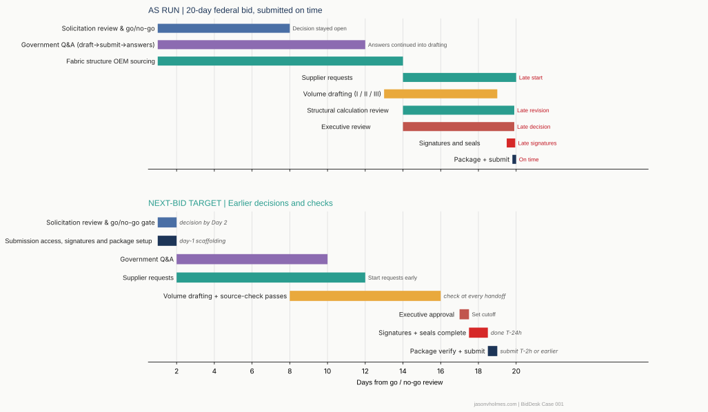
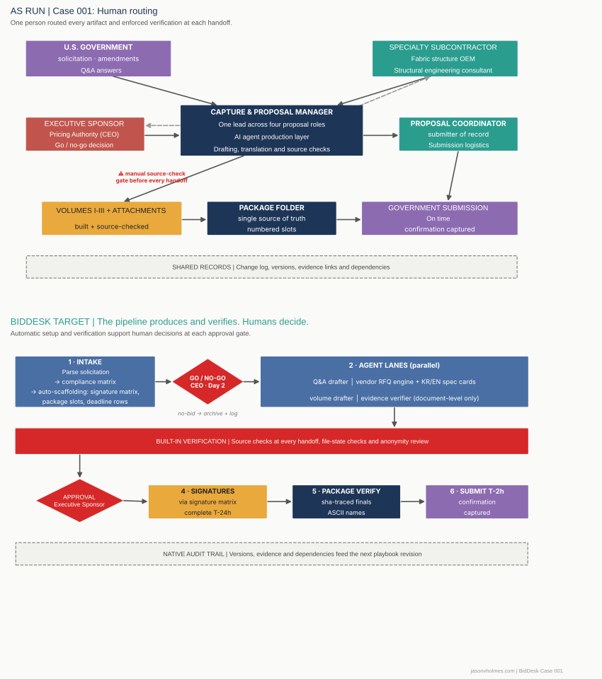

The five roles
A two-person Korean small business bid directly on a U.S. federal solicitation. The proposal work would typically take a three- or four-person proposal shop. AI agents took on drafting, research, Korean/English translation, verification and record-keeping.
- Jason V. Holmes during the bid
- Capture & Proposal Manager
- Systems Engineer
- AI Engineer
- Software Engineer
- Jason V. Holmes in the performance phase
- Construction Manager
Who carried the work
The figures show estimated shares of effort-hours for the roles listed. The Executive Sponsor & Pricing Authority (CEO) made pricing decisions, and the Proposal Coordinator / Submitter of Record ran submission logistics.
- AI agent production layer
- ~40%
- Capture & Proposal Manager
- ~30%
- Specialty Subcontractor (fabric structure OEM) with structural engineering consultant
- ~10%
- Executive Sponsor & Pricing Authority (CEO)
- ~10%
- Proposal Coordinator / Submitter of Record
- ~8%
The structural calculation went through three revisions as it moved from Korean Design Standards (KDS) to ASCE 7-22 / UFC.
The timetable
Case 001 went through drafting, structural review, signatures and final assembly inside one 20-day cycle. The next-bid template brings package setup to day 1, starts supplier requests in one wave and sets earlier gates for signatures and submission.


The workflow
One person routed every artifact between the people and agents doing the work. The source-check gate depended on applying the same rule at every handoff. The planned BidDesk pipeline builds verification into the handoff and keeps decisions with people.


What we logged
- Errors logged and closed before submission
- 17
- Caught in one automated source-check pass before upload
- 8
Every bad call came from using a proxy for the underlying artifact. Filenames stood in for files, text layers for rendered pages, seller web copy for specification sheets, and website lists for contracts.
Open the file. Render the actual document before making a claim about its state or contents. Trace each proposal fact to a primary record such as the contract, a data sheet or a test report before it enters a volume.
The next-bid template
Template v1 sets a gate for each phase. From day 1, a signature matrix tracks every signature, seal and date block. A submission folder with numbered slots doubles as a checklist. A shared spelling registry keeps proper nouns consistent across volumes.
| When | Phase | Gate |
|---|---|---|
| Day 1 | Break down requirements and set up the compliance matrix, signature matrix, package slots and deadlines. | Confirm the setup is ready and check submitter readiness. |
| Days 1–2 | Assess whether to bid. | Get the executive go/no-go decision by day 2. |
| Days 2–10 | Prepare and submit Government questions. | Submit all questions before the cutoff. |
| Days 2–12 | Send supplier requests in one wave. | Before each call, prepare a bilingual spec card with known specs, open questions and a reply deadline. |
| Days 8–16 | Draft volumes and source-check every handoff. | Verify every claim against its primary record, including supplier claims. |
| 24 hours before deadline | Complete signatures and seals. | Close every row in the signature matrix. |
| 18 hours before deadline | Executive freeze. | Rebuild once after the freeze. Later changes require a named executive exception. |
| 2 hours before deadline | Verify and submit the final package. | Capture Government confirmation. |
Targets for each bid
- Zero errors reach leadership or the Government.
- Zero incorrect calls about document state.
- Zero signatures in the final two hours.
- Submit at least two hours before the deadline.
- Zero supplier calls with incomplete specifications.
What BidDesk will automate
BidDesk is the planned bid-building module for Gyeoldesk. Case 001 is the baseline for its design.
- Intake. Turn solicitation requirements into a compliance matrix and create signature rows, package slots and deadline records.
- Parallel agent lanes. Give Government Q&A, supplier requests and spec cards, volume drafting, and evidence verification their own workstreams.
- Built-in verification. Run a source check at every handoff and verify document state from the rendered file.
- Native audit trail. Record changes and evidence as the work moves, then draft lessons learned for the next template revision.
Case 002 will be measured against this baseline.